3. Binárne stromy¶
Pripomeňme si, ako sme doteraz pracovali so spájaným zoznamom:
spájaný zoznam sa skladal z vrcholov, ktoré boli navzájom pospájané smerníkmi (referenciami, pointermi)
zoznam bol prístupný cez referenciu na prvý vrchol
každý vrchol, okrem posledného mal svojho jediného nasledovníka (atribút
next)pre dvojsmerný spájaný zoznam každý vrchol okrem prvého mál v zozname svojho predchodcu - už vieme, že keď chceme zrušiť zo zoznamu nejaký vrchol, musíme meniť aj nasledovníka predchodcu …
Používali sme takúto deklaráciu vrcholu:
class Vrchol:
def __init__(self, data, next=None):
self.data = data
self.next = next
Na postupné prechádzanie všetkých vrcholov zoznamu nám stačil takýto jednoduchý while-cyklus:
pom = zac # začiatok zoznamu
while pom is not None:
print(pom.data) # spracuje vrchol
pom = pom.next
Túto schému prechádzania prvkov vieme využiť aj na zisťovanie počtu prvkov, na zisťovanie, či sa nejaká hodnota nachádza v zozname, na vyhadzovanie niektorých existujúcich, resp. pridávanie nových vrcholov.
Spájané zoznamy sú najjednoduchším prípadom spájaných štruktúr, pre ktoré sú prvky spájané referenciami (smerníkmi).
Ďalšou spájanou dátovou štruktúrou je strom (tree), o ktorej sa zvykne hovoriť, že je to hierarchická dátová štruktúra.
Kde všade môžeme vidieť stromovú dátovú štruktúru:
rodokmeň, napríklad potomkovia bývalej anglickej kráľovnej Alžbety II:
zo stromu potomkov môžeme zjednodušiť takéto grafické zobrazenie:
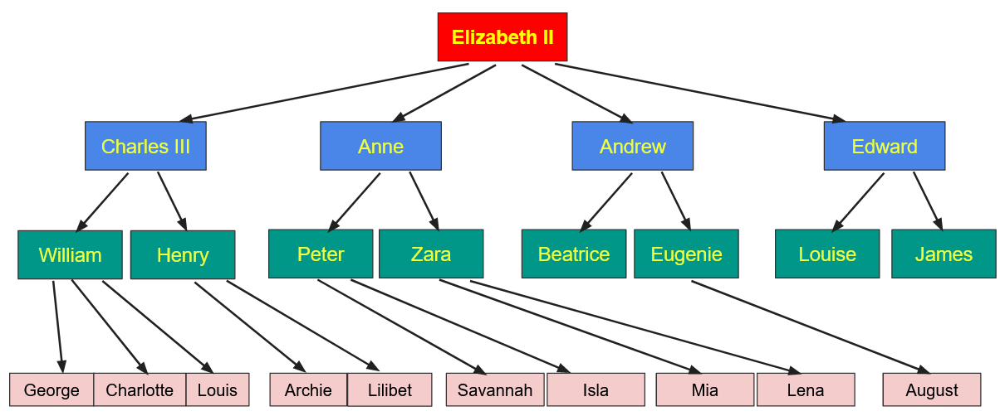
vidíme, že kráľovná má štyroch potomkov (troch synov a jednu dcéru), tieto jej deti majú ďalších potomkov (vnukov aj vnučky) a tiež pravnukov a pravnučky
veľmi zaujímavý je aj graf predkov súčasného kráľa na wikipédii
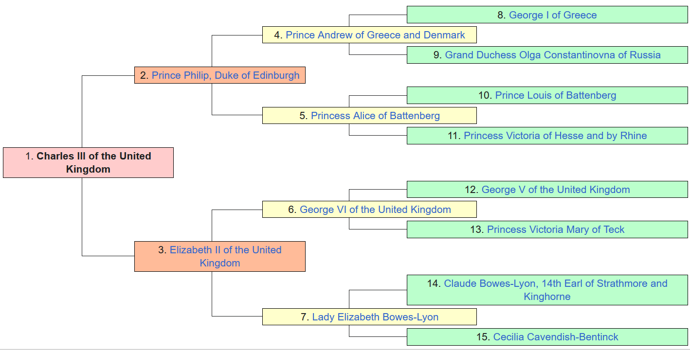
v tomto grafe má každá osoba (v strede vľavo je bývalá anglická kráľovná Alžbeta II. s číslom 1) práve dvoch rodičov: otec je horná osoba (s číslom 2) a matka je dolná osoba (s číslom 3); osoby s číslami 4 až 7 sú štyria starí rodičia bývalej kráľovnej; osoby s číslami 8 až 15 sú prastarí rodičia; všimnite si, že v každej ďalšej úrovni (v ďalšej generácii) tohto zobrazenia je dvojnásobný počet osôb z predchádzajúcej úrovne (každá osoba má práve dvoch rodičov)
štruktúra adresárov (priečinkov) na disku: nejaký adresár je domovský a ten môže mať pod sebou niekoľko podadresárov, niektoré z nich môžu opäť obsahovať ďalšie podadresáre, …
štruktúra fakulty: naša fakulta sa skladá zo štyroch skupín odborných katedier (matematickej, fyzikálnej, informatickej a didaktickej) a ďalšími pracoviskami, každá sekcia sa skladá z niekoľkých katedier a väčšina katedier sa ešte delí na oddelenia
štruktúra učebnice, manuálu: materiály sa skladajú z kapitol, tie z podkapitol a rôznych podčastí
hierarchia objektových tried: z bázovej triedy môžeme odvodiť niekoľko ďalších a aj z týchto odvodených tried môžeme vytvárať ďalšie triedy, napríklad v prednáške 13. Triedy a dedičnosť sme zo základnej triedy
turtle.Turtlevytvorili trieduMojaTurtlea z nej sme postupne vytvárali triedyMojaTurtle1,MojaTurtle2aMojaTurtle3
{kind=link}
{kind=link}
Aj všetky tieto ďalšie štruktúry by sme vedeli zakresliť do tvaru stromovej štruktúry, ktorá má nejaký počiatočný vrchol (napríklad kráľovná, domovský adresár, fakulta, kniha, bázová trieda, …) a z tohto vrcholu vychádzajú ďalšie a ďalšie vrcholy (potomkovia, podadresáre, sekcie, kapitoly, …).
Všeobecný strom¶
Spájaná dátová štruktúra strom je zovšeobecnením spájaného zoznamu:
skladá sa z množiny vrcholov, v každom vrchole sa nachádza nejaká informácia (napríklad atribút
data)vrcholy sú navzájom pospájané hranami:
jeden vrchol má špeciálne postavenie: je prvý a od neho sa vieme dostať ku všetkým zvyšným vrcholom
každý vrchol okrem prvého má práve jedného predchodcu
každý vrchol môže mať ľubovoľný počet nasledovníkov (nie iba jeden, ako to bolo pri spájaných zoznamoch)
Napríklad, v takomto strome:
{kind=link}
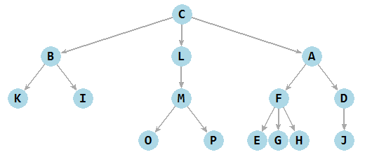
jediný vrchol C nemá predchodcu, všetky ostatné vrcholy majú práve jedného predchodcu. Niektoré vrcholy (D a L) majú len jedného nasledovníka, niektoré (A, B a M) majú dvoch nasledovníkov, dva vrcholy C a F majú až troch nasledovníkov. Všetky zvyšné vrcholy nemajú ani jedného nasledovníka.
Zvykne sa používať takáto terminológia z botaniky:
koreň (root) je špeciálny prvý vrchol - jediný nemá svojho predchodcu (vrchol
C)vetva (branch) je hrana (budeme ju kresliť šípkou) označujúca nasledovníka
list (leaf) označuje vrchol, ktorý už nemá žiadneho nasledovníka (listami tohto stromu sú vrcholy
E,G,H,I,J,K,OaP)
Okrem botanickej terminológie sa pri stromoch používa aj takáto terminológia rodinných vzťahov:
predchodca každého vrcholu (okrem koreňa) sa nazýva rodič, predok, niekedy aj otec (parent, ancestor)
nasledovník vrcholu sa nazýva potomok alebo dieťa, niekedy aj syn (descendant, child)
vrcholy, ktoré majú spoločného predchodcu (predka) sa nazývajú súrodenci (siblings), napríklad
A,B,Lsú súrodenci, aleIaMsúrodencami nie sú
Ďalej sú dôležité ešte aj tieto pojmy:
okrem listov sa v strome môžu nachádzať aj vnútorné vrcholy (interior nodes), to sú tie, ktoré majú aspoň jedného potomka (v našom príklade sú to
A,B,C,D,F,L,M)medzi dvoma vrcholmi môžeme vytvárať cesty, t.j. postupnosti hrán, ktoré spájajú vrcholy - samozrejme, že len v smere od predkov k potomkom (v smere šípok) - dĺžkou cesty je počet týchto hrán (medzi rodičom a dieťaťom je cesta dĺžky 1), napríklad cesta
C-A-F-Gmá dĺžku 3úroveň, alebo hĺbka vrcholu (level, depth) je dĺžka cesty od koreňa k tomuto vrcholu, teda koreň má hĺbku 0, jeho deti majú hĺbku 1, ich deti (vnuci/vnučky) ležia na úrovni 2, atď. (na 2. úrovni stromu ležia vrcholy
D,F,I,K,M)výška stromu (height) je maximálna úroveň v strome, t.j. dĺžka najdlhšej cesty od koreňa k listom (strom v našom príklade má výšku 3)
podstrom (subtree) je časť stromu, ktorá začína v nejakom vrchole a obsahuje všetkých jeho potomkov (nielen deti, ale aj ich potomkov, …), napríklad strom s vrcholmi
L,M,O,Pje podstrom výšky 2 a podstrom s vrcholmiE,F,G,Hmá výšku 1šírka stromu (width) je počet vrcholov v úrovni, v ktorej je najviac vrcholov (strom v našom príklade má šírku 6)
Niekedy sa všeobecný strom definuje aj takto rekurzívne:
strom je buď prázdny (neobsahuje žiadny vrchol), alebo
obsahuje koreň a množinu podstromov, ktoré vychádzajú z tohto koreňa, pričom každý podstrom je opäť všeobecný strom (ak nie je prázdny, má svoj koreň a aj svoje podstromy)
Binárny strom¶
má dve extra vlastnosti:
každý vrchol má maximálne dvoch potomkov
rozlišuje medzi ľavým a pravým potomkom - budeme to kresliť buď šípkou šikmo vľavo dole alebo šikmo vpravo dole
Napríklad, takýto binárny strom:
{kind=link}
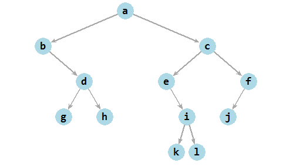
Vrchol b nemá ľavého potomka, len pravého. Rovnako je na tom aj vrchol e. Vrchol f má len ľavého potomka a nemá pravého. Všetky ostatné vrcholy sú buď listami (nemajú žiadne deti) alebo majú oboch potomkov, ľavého aj pravého.
Aj binárny strom môžeme definovať rekurzívne:
je buď prázdny,
alebo sa skladá z koreňa a z dvoch jeho podstromov: z ľavého podstromu a pravého podstromu, tieto sú opäť binárne stromy (môžu byť aj prázdne)
Všetko, čo platí pre všeobecné stromy, platí aj pre binárne, t.j. má koreň, má rodičov a potomkov, má listy aj vnútorné vrcholy, má cesty aj úrovne, hovoríme o hĺbke vrcholov aj výške stromu.
Zamyslime sa nad maximálnym počtom vrcholov v jednotlivých úrovniach:
v 0. úrovni môže byť len koreň, teda len 1 vrchol
koreň môže mať dvoch potomkov, teda v 1. úrovni môžu byť maximálne 2 vrcholy
v 2. úrovni môžu byť len deti predchádzajúcich dvoch vrcholov v 1. úrovni, teda maximálne 4 vrcholy
v každej ďalšej úrovni môže byť maximálne dvojnásobok predchádzajúcej, teda v i-tej úrovni môže byť maximálne 2**i vrcholov
strom, ktorý má výšku h môže mať maximálne 1 + 2 + 4 + 8 + … + 2**h vrcholov, teda spolu 2**(h+1)-1 vrcholov
strom s maximálnym počtom vrcholov s výškou h sa nazýva úplný strom
Napríklad:
{kind=link}
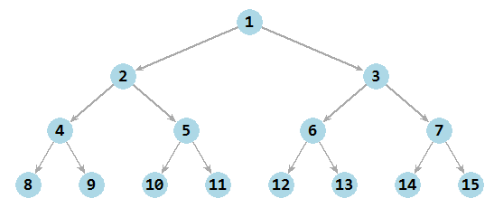
Tento strom má výšku 3 a preto počet všetkých vrcholov je 1 + 2 + 4 + 8 = 15, čo je naozaj 2**4-1
Realizácia spájanou štruktúrou¶
Binárny strom budeme realizovať podobne ako spájaný zoznam, t.j. najprv definujeme triedu Vrchol, v ktorej sa definujú atribúty každého prvku binárneho stromu:
class Vrchol:
def __init__(self, data, left=None, right=None):
self.data = data
self.left = left
self.right = right
Na rozdiel od spájaného zoznamu, tento vrchol binárneho stromu má namiesto jedného nasledovníka next dvoch nasledovníkov: ľavého left a pravého right. Vytvorme najprv 3 izolované vrcholy:
>>> a = Vrchol('A')
>>> b = Vrchol('B')
>>> c = Vrchol('C')
Tieto tri vrcholy môžeme chápať ako 3 jednovrcholové stromy. Pomocou priradení môžeme pripojiť stromy b a c ako ľavý a pravý podstrom vrcholu a:
>>> a.left = b
>>> a.right = c
Takto vytvorený binárny strom má 3 vrcholy, z toho 2 sú listy a jeden (koreň) je vnútorný. Výška stromu je 1 a šírka 2. V 0. úrovni je jeden vrchol 'A', v 1. úrovni je 'B' a 'C'.
Takýto istý strom vieme vytvoriť jediným priradením:
>>> a = Vrchol('A', Vrchol('B'), Vrchol('C'))
Ak chceme teraz vypísať hodnoty vo vrcholoch tohto stromu, môžeme to urobiť, napríklad takto:
>>> print(a.data, a.left.data, a.right.data)
A B C
Ak by bol strom trochu komplikovanejší, výpis vrcholov by bolo dobre nejako zautomatizovať. Napríklad, takýto strom:
>>> a = Vrchol('A', Vrchol('B', Vrchol(1), Vrchol(2)), Vrchol('C', None, Vrchol(3)))
Tento strom so 6 vrcholmi má už výšku 2, pričom v druhej úrovni sú tri vrcholy: 1, 2 a 3.
Nakreslenie stromu¶
Strom nakreslíme rekurzívne. Prvá verzia bez kreslenia čiar:
import tkinter
canvas = tkinter.Canvas(width=400, height=400)
canvas.pack()
def kresli(v, sir, x, y):
if v is not None:
canvas.create_text(x, y, text=v.data)
kresli(v.left, sir/2, x-sir/2, y+40)
kresli(v.right, sir/2, x+sir/2, y+40)
Prvým parametrom funkcie je koreň stromu (teda referencia na najvrchnejší vrchol stromu). Druhým parametrom je polovičná šírka grafickej plochy. Ďalšie dva parametre sú súradnicami, kde sa nakreslí koreň stromu. Všimnite si, že v rekurzívnom volaní:
smerom vľavo budeme vykresľovať ľavý podstrom, preto
x-ovú súradnicu znížime o polovičnú šírku plochy,y-ovú zvýšime o nejakú konštantu, napríklad 40smerom vpravo budeme kresliť pravý podstrom a teda
x-ovú súradnicu zväčšíme tak, aby bola v polovici šírky oblasti
Môžete to vyskúšať, napríklad pre takýto strom:
strom = Vrchol('A', Vrchol('B', Vrchol(1), Vrchol(2)), Vrchol('C', None, Vrchol(3)))
kresli(strom, 200, 200, 40)
Ak by sme chceli kresliť aj hrany stromu (spojnice medzi vrcholmi), môžeme to zapísať, napríklad takto (táto druhá verzia má ešte chyby):
def kresli(v, sir, x, y):
canvas.create_text(x, y, text=v.data)
if v.left is not None:
kresli(v.left, sir/2, x-sir/2, y+40)
canvas.create_line(x, y, x-sir/2, y+40)
if v.right is not None:
kresli(v.right, sir/2, x+sir/2, y+40)
canvas.create_line(x, y, x+sir/2, y+40)
Takéto vykresľovanie stromu má ale tú chybu, že nakreslené hrany (čiary) prechádzajú cez vypísané hodnoty vo vrcholoch. Opravíme to tak, že nakreslenie samotného vrcholu (bude to teraz farebný krúžok s textom) presťahujeme až na koniec funkcie, kreslenie čiar bude naopak ako prvé, aby nakreslené krúžky tieto čiary prekryli:
def kresli(v, sir, x, y):
if v.left is not None:
canvas.create_line(x, y, x-sir/2, y+40)
kresli(v.left, sir/2, x-sir/2, y+40)
if v.right is not None:
canvas.create_line(x, y, x+sir/2, y+40)
kresli(v.right, sir/2, x+sir/2, y+40)
canvas.create_oval(x-15, y-15, x+15, y+15, fill='white')
canvas.create_text(x, y, text=v.data, font='consolas 12')
Opäť otestujte aj túto vylepšenú verziu.
Zrejme, neskôr si budete túto verziu rôzne prispôsobovať:
budete kresliť strom na iný rozmer plochy
niektoré farebné krúžky môžete prefarbiť podľa obsahu, resp. polohy vrcholu
hrany sa môžu kresliť ako šípky a nie ako úsečky
Generovanie náhodného stromu¶
Využijeme náhodný generátor random.randrange. Princíp tejto funkcie je nasledovný:
pridávať budeme len do neprázdneho stromu (strom musí obsahovať aspoň koreň)
funkcia sa najprv rozhodne, či bude pridávať do ľavého alebo do pravého podstromu (test
random.randrange(2)testuje, či má náhodné číslo z množiny {0, 1} hodnotu 1, teda je to pravdepodobnosť 50%)ďalej zistí, či daný podstrom existuje (napríklad,
vrch.left is Noneoznačuje, že neexistuje), ak nie, tak na jeho mieste vytvorí nový vrchol s danou hodnotouak podstrom na tomto mieste už existuje, znamená to, že tu nemôžeme „zavesiť“ nový vrchol, ale musíme preň hľadať nové miesto, preto sa toto hľadanie opakuje už od nového vrcholu (nižšie uvidíme aj rekurzívnu verziu, pri ktorej sa pridávanie vrcholu do tohto podstromu zrealizuje rekurzívnym volaním)
Najprv nerekurzívna verzia funkcie:
import random
def pridaj_vrchol(vrch, hodnota):
while True:
if random.randrange(2):
if vrch.left is None:
vrch.left = Vrchol(hodnota)
return
vrch = vrch.left
else:
if vrch.right is None:
vrch.right = Vrchol(hodnota)
return
vrch = vrch.right
Teraz rekurzívna verzia:
def pridaj_vrchol(vrch, hodnota):
if random.randrange(2):
if vrch.left is None:
vrch.left = Vrchol(hodnota)
else:
pridaj_vrchol(vrch.left, hodnota)
else:
if vrch.right is None:
vrch.right = Vrchol(hodnota)
else:
pridaj_vrchol(vrch.right, hodnota)
Môžeme otestovať:
koren = Vrchol(random.randint(1, 20))
for h in range(20):
pridaj_vrchol(koren, random.randint(1, 20))
alebo:
strom = Vrchol('p')
for i in 'rogramovanie':
pridaj_vrchol(strom, i)
Tieto testy spustite viackrát a zakaždým strom vykreslite (pomocou funkcie kresli). Uvidíte rôzne usporiadania vrcholov v strome a tieto budú mať možno rôzne výšky.
Ďalšie rekurzívne funkcie¶
Tieto funkcie budú rekurzívne prechádzať všetky vrcholy v strome: najprv v ľavom podstrome a potom aj v pravom.
Uvádzame dve verzie súčtu hodnôt vo vrcholoch. Prvá verzia, keď zistí, že je strom neprázdny, vypočíta súčet najprv v ľavom podstrome a potom aj v pravom. Výsledkom celej funkcie je potom súčet hodnoty v koreni stromu + súčet všetkých hodnôt v ľavom podstrome + súčet všetkých hodnôt v pravom podstrome:
def sucet(vrch):
if vrch is None:
return 0
vlavo = sucet(vrch.left)
vpravo = sucet(vrch.right)
return vrch.data + vlavo + vpravo
print('sucet =', sucet(koren))
Skúsenejší programátori túto funkciu vedia zapísať aj takto „úspornejšie“:
def sucet(vrch):
if vrch is None:
return 0
return vrch.data + sucet(vrch.left) + sucet(vrch.right)
Otestujte túto funkciu na náhodne generovaných stromoch, napríklad:
strom = Vrchol(random.randint(1, 20))
for i in range(20):
pridaj_vrchol(strom, random.randint(1, 20))
kresli(strom, 200, 200, 40)
print('sucet hodnot =', sucet(strom))
Na veľmi podobnom princípe pracuje aj zisťovanie celkového počtu vrcholov v strome:
def pocet(vrch):
if vrch is None:
return 0
return 1 + pocet(vrch.left) + pocet(vrch.right)
print('pocet vrcholov =', pocet(strom))
Ďalej budeme zisťovať výšku stromu (opäť bude niekoľko verzií). Najprv verzia, ktorá ešte nie je tá správna:
def vyska(vrch):
if vrch is None:
return 0
vyska_vlavo = vyska(vrch.left)
vyska_vpravo = vyska(vrch.right)
return 1 + max(vyska_vlavo, vyska_vpravo)
Funkcia najprv rieši situáciu, keď je strom prázdny: vtedy dáva výsledok 0. Keď nie je strom prázdny, najprv sa vypočíta výška ľavého podstromu, potom aj výška pravého podstromu. Na záver sa z týchto dvoch výšok vyberie tá väčšia a k tomu sa ešte pripočíta 1, lebo celkový strom okrem dvoch podstromov obsahuje aj koreň, ktorý je o úroveň vyššie.
Táto funkcia ale nedáva správne výsledky. Keď ju otestujete, zistíte, že dostávate o 1 väčšiu hodnotu, ako je skutočná výška. Napríklad:
>>> strom = Vrchol(1)
>>> vyska(strom)
1
>>> strom = Vrchol(1, Vrchol(2), Vrchol(3))
>>> vyska(strom)
2
Pripomíname, že výška je počet hrán na ceste od koreňa k najnižšiemu vrcholu (k nejakému listu). Strom, ktorý obsahuje len koreň, by mal mať výšku 0 a strom, ktorý má koreň a dvoch jeho potomkov, má dve takéto cesty (od koreňa k listom) a obe majú dĺžku 1 (len 1 hranu). Problémom v tomto riešení je výška prázdneho stromu: tá nemôže by 0, lebo 0 je pre strom s 1 vrcholom. Dohodneme sa, že výškou prázdneho stromu bude -1 a potom to už bude celé fungovať správne:
def vyska(vrch):
if vrch is None:
return -1
vyska_vlavo = vyska(vrch.left)
vyska_vpravo = vyska(vrch.right)
return 1 + max(vyska_vlavo, vyska_vpravo)
alebo druhá verzia, ktorá si výšky jednotlivých podstromov nepočíta do pomocných premenných, ale priamo ich pošle do štandardnej funkcie max():
def vyska(vrch):
if vrch is None:
return -1 # pre prázdny strom
return 1 + max(vyska(vrch.left), vyska(vrch.right))
print('vyska =', vyska(strom))
Výpis hodnôt vo vrcholoch v nejakom poradí:
def vypis(vrch):
if vrch is None:
return
print(vrch.data, end=' ')
vypis(vrch.left)
vypis(vrch.right)
vypis(strom)
Vo výpise sa objavia hodnoty vo všetkých vrcholoch v nejakom poradí.
Metóda __repr__¶
Veľmi zaujímavo sa správa metóda __repr__(), ktorú zapíšeme priamo v triede Vrchol:
class Vrchol:
def __init__(self, data, left=None, right=None):
self.data, self.left, self.right = data, left, right
def __repr__(self):
return f'Vrchol({self.data!r}, {self.left}, {self.right})'
Otestujeme:
>>> strom = Vrchol(1, Vrchol(2, Vrchol(4)), Vrchol(3))
>>> strom
Vrchol(1, Vrchol(2, Vrchol(4, None, None), None), Vrchol(3, None, None))
Vidíte, že táto metóda je rekurzívna, pričom Python tu správne zvláda aj triviálny prípad.
Cvičenie¶
Poznámka
riešenia úloh ulož do jedného súboru a odovzdaj na úlohový server https://vektor.fmph.uniba.sk/
testovací server tieto ulohy nebude testovať, vyrieš a odovzdaj ich všetky okrem tých, ktoré sú označené znakom -
prvé tri riadky súboru s riešením musia obsahovať:
# 3. cvicenie # student: Janko Hrasko # datum: 3.3.2026
zrejme ako študenta uvedieš svoje meno.
V úlohách predpokladáme tieto definície z prednášky:
class Vrchol:
def __init__(self, data, left=None, right=None):
self.data, self.left, self.right = data, left, right
def kresli(vrch, sir, x, y):
if vrch.left is not None:
canvas.create_line(x, y, x-sir/2, y+40)
kresli(vrch.left, sir/2, x-sir/2, y+40)
if vrch.right is not None:
canvas.create_line(x, y, x+sir/2, y+40)
kresli(vrch.right, sir/2, x+sir/2, y+40)
canvas.create_oval(x-15, y-15, x+15, y+15, fill='white')
canvas.create_text(x, y, text=vrch.data, font='consolas 12')
def pocet(vrch):
if vrch is None:
return 0
return 1 + pocet(vrch.left) + pocet(vrch.right)
def vyska(vrch):
if vrch is None:
return -1 # pre prázdny strom
return 1 + max(vyska(vrch.left), vyska(vrch.right))
- Do premennej
stromsme priradili binárny strom. Nakresli ho na papier (bez počítača):>>> strom = Vrchol(7,Vrchol(13,None,Vrchol(5,Vrchol(8))),Vrchol(2,Vrchol(11,Vrchol(19)),Vrchol(3)))
Skontroluj svoju kresbu s vykreslením pomocou
kresli().Riešenie
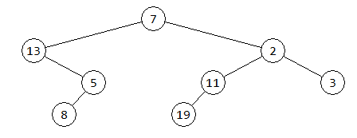
{kind=link}
- Do premennej
strompriraď binárny strom, ktorý po vykreslení vyzerá takto: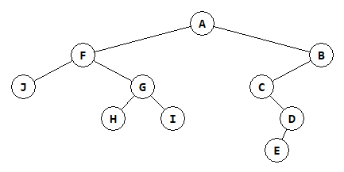
Najprv bez počítača odpovedz, aká je výška tohto stromu? Potom to skontroluj pomocou funkcie
vyska().Pre daný strom odpovedz na tieto otázky:
koľko má vnútorných vrcholov a koľko listov?
koľko vrcholov má ľavý podstrom s koreňom
Fa koľko pravý podstrom s koreńomB?aká je výška ľavého aj pravého podstromu (skontroluj to aj pomocou funkcie
vyska())?ktoré vrcholy sa nachádzajú v 0. úrovni, ktoré v 1. úrovni, ktoré v 2. a v 3. úrovniach?
aká je šírka tohto stromu?
vymenuj všetky cesty z vrcholu
Fdo listov stromu
Riešenie
strom = Vrchol('A', Vrchol('F', Vrchol('J'), Vrchol('G', Vrchol('H'), Vrchol('I'))), Vrchol('B', Vrchol('C', None, Vrchol('D', Vrchol('E')))))
Tento strom:
výška je 4
má 6 vnútorných vrcholov a 4 listy
ľavý podstrom s koreňom
Fmá 5 vrcholov, pravý podstrom s koreńomBmá 4 vrcholyvýška ľavého podstromu je 2 a pravého podstromu je 3; kontrola, napríklad, pomocou:
print('lava vyska =', vyska(strom.left)) print('prava vyska =', vyska(strom.right))
vrcholy:
v 0. úrovni:
Av 1. úrovni:
F,Bv 2. úrovni:
J,G,Cv 3. úrovni:
H,I,Dv 4. úrovni:
E
šírka stromu je 3
všetky cesty z vrcholu
Fdo listov stromu:FJ FGH FGI
{kind=link}
- Nakresli aj tento strom a zisti, aká je jeho výška:
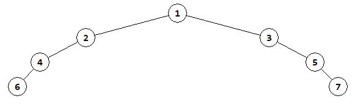
zrejme najprv priradíš tento strom do premennej a potom zavoláš
kresli()výšku skontroluj pomocou funkcie
vyska()aká je šírka tohto stromu (zatiaľ bez funkcie)?
Riešenie
strom = Vrchol(1, Vrchol(2, Vrchol(4, Vrchol(6))), Vrchol(3, None, Vrchol(5, None, Vrchol(7))))
Platí:
výška stromu 3
šírka stromu je 2
{kind=link}
Uprav funkciu
kresli()tak, aby sa listy stromu kreslili'lightgreen'farbou a vnútorné vrcholy'lightblue'. Napríklad, takto: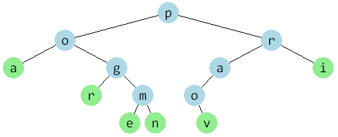
Riešenie
def kresli(v, sir, x, y): if v.left is not None: canvas.create_line(x, y, x-sir/2, y+40) kresli(v.left, sir/2, x-sir/2, y+40) if v.right is not None: canvas.create_line(x, y, x+sir/2, y+40) kresli(v.right, sir/2, x+sir/2, y+40) if v.left is None and v.right is None: farba = 'lightgreen' else: farba = 'lightblue' canvas.create_oval(x-15, y-15, x+15, y+15, fill=farba, width=0) canvas.create_text(x, y, text=v.data, font='consolas 12')
{kind=link}
Napíš funkciu
vyrob_strom(postupnost), ktorá vytvorí náhodný binárny strom z prvkov zadanej nejakej postupnosti. Koreňom stromu bude prvý prvok postupnosti. Funkcia vráti referenciu na koreň stromu. Využi ideu nerekurzívnej funkcie z prednášky.Napríklad, volanie
vyrob_strom('Python')vytvorí náhodný strom so 6 vrcholmi - tento strom vykresli a vypíš výšku stromu aj počet vrcholov.Skontroluj aj volanie
vyrob_strom(range(1000))a vypíš výšku tohto stromu aj počet jeho vrcholov.Funkcia by mala fungovať aj pre prázdnu postupnosť, napríklad
vyrob_strom(()).Riešenie
import random def vyrob_strom(postupnost): koren = None for hodnota in postupnost: if koren is None: koren = Vrchol(hodnota) else: vrch = koren while True: if random.randrange(2): if vrch.left is None: vrch.left = Vrchol(hodnota) break vrch = vrch.left else: if vrch.right is None: vrch.right = Vrchol(hodnota) break vrch = vrch.right return koren
Napríklad:
strom = vyrob_strom('Python') strom1 = vyrob_strom(range(1000)) strom2 = vyrob_strom(range(1, 1))
- Nakresli taký binárny strom, ktorý má práve 6 listov a v týchto listoch sú postupne zľava doprava písmená zo slova
'Python', zvyšné vnútorné vrcholy stromu obsahujú znak bodku'.'. Tento strom priraď do premennej a skontroluj:strom = ... kresli(strom, ...)
Navrhni taký strom (opäť s písmenami
'Python'), ktorého všetky listy majú rovnakú vzdialenosť od koreňa (tzv. hĺbka vrcholu). Priraď tento strom do premennej a nakresli.Navrhni taký strom, ktorého všetky listy majú navzájom rôznu vzdialenosť od koreňa: vrchol
'P'bude mať vzdialenosť 1, vrchol'y'vzdialenosť 2, vrchol't'vzdialenosť 3, … Priraď tento strom do premennej a nakresli.
Riešenie
Napríklad:
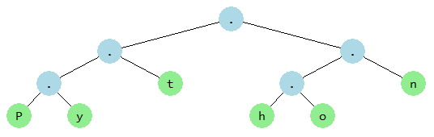
Priradenie:
strom = Vrchol('.', Vrchol('.', Vrchol('.', Vrchol('P'), Vrchol('y')), Vrchol('t')), Vrchol('.', Vrchol('.', Vrchol('h'), Vrchol('o')), Vrchol('n'))) kresli(strom, 300, 300, 50)
Ak majú mať všetky listy rovnakú hĺbku, môžeme zadať, napríklad:
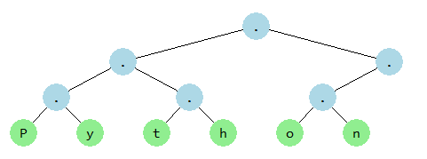
Priradenie:
strom = Vrchol('.', Vrchol('.', Vrchol('.', Vrchol('P'), Vrchol('y')), Vrchol('.', Vrchol('t'), Vrchol('h'))), Vrchol('.', Vrchol('.', Vrchol('o'), Vrchol('n'))))
Ak majú mať všetky listy rôznu hĺbku (od 1 do 6), môžeme zadať, napríklad:
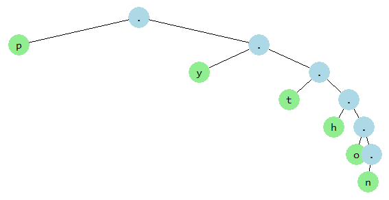
Priradenie:
strom = Vrchol('.', Vrchol('p'), Vrchol('.', Vrchol('y'), Vrchol('.', Vrchol('t'), Vrchol('.', Vrchol('h'), Vrchol('.', Vrchol('o'), Vrchol('.', Vrchol('n')))))))
{kind=link}
{kind=link}
{kind=link}
- Navrhni také binárne stromy, ktoré majú presne 6 vrcholov (hodnoty vo vrcholoch nás teraz nezaujímajú, môžu to byť prázdne reťazce), ale
má len 1 list
má 2 listy, ale maximálnu možnú výšku
má 2 listy, ale minimálnu možnú výšku
má maximálny možný počet listov
Tieto štyri stromy zadefinuj ako pythonovskú štruktúru
stroma vykresliť pomocoukresli().Riešenie
Napríklad (každá podúloha má veľa rôznych riešení):
má len 1 list:
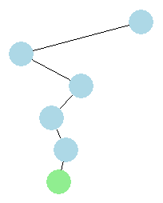
Priradenie:
strom = Vrchol('', Vrchol('', None, Vrchol('', Vrchol('', None, Vrchol('', Vrchol(''))))))
má 2 listy, ale maximálnu možnú výšku:
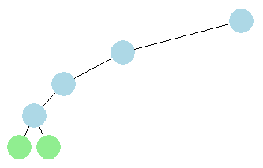
Priradenie:
strom = Vrchol('', Vrchol('', Vrchol('', Vrchol('', Vrchol(''), Vrchol('')))))
má 2 listy, ale minimálnu možnú výšku:
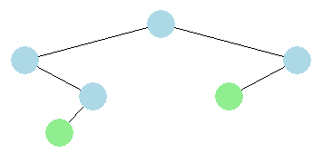
Priradenie:
strom = Vrchol('', Vrchol('', None, Vrchol('', Vrchol(''))), Vrchol('', Vrchol('')))
má maximálny možný počet listov:
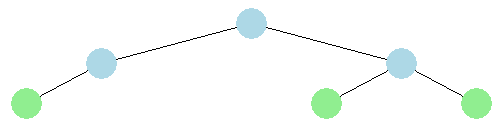
Priradenie:
strom = Vrchol('', Vrchol('', Vrchol('')), Vrchol('', Vrchol(''), Vrchol('')))
{kind=link}
{kind=link}
{kind=link}
{kind=link}
- Nakresli všetky rôzne binárne stromy, ktoré sa skladajú z 3 vrcholov s hodnotami
'x'. Týchto stromov by malo byť 5. Nakresli ich všetky vedľa seba (pomocoukresli()) do jednej grafickej plochy (do jednéhocanvaspríde 5 volaníkresli), napríklad takto:kresli(Vrchol('x', Vrchol('x'), Vrchol('x')), 50, 50, 30) kresli(Vrchol('x', Vrchol('x', Vrchol('x'))), 50, 150, 30) ...
Pokús sa odhadnúť, koľko existuje rôznych binárnych stromov, ktoré sú zložené zo štyroch vrcholov.
Riešenie
kresli(Vrchol('x', Vrchol('x'), Vrchol('x')), 50, 70, 30) kresli(Vrchol('x', Vrchol('x', Vrchol('x'))), 50, 180, 30) kresli(Vrchol('x', Vrchol('x', None, Vrchol('x'))), 50, 250, 30) kresli(Vrchol('x', None, Vrchol('x', Vrchol('x'))), 50, 320, 30) kresli(Vrchol('x', None, Vrchol('x', None, Vrchol('x'))), 50, 400, 30)
dostaneme:
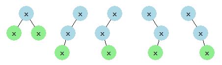
Počet rôznych binárnych stromov, ktoré sú zložené zo štyroch vrcholov je 14:
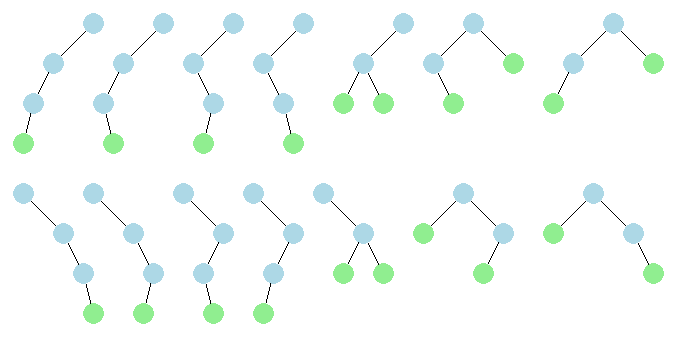
{kind=link}
{kind=link}
Napíš funkciu
pocet_listov(vrch), ktorá pre daný binárny strom zistí počet listov. Funkcia sa bude podobať funkciipocet(vrch). Funkcia bude zrejme rekurzívna a bude riešiť tieto prípady:pre prázdny strom bude výsledkom
0pre vrchol, ktorý je listom (ľavý aj pravý podstrom je
None), bude výsledkom1inak zistí počet listov v ľavom podstrome a aj počet listov v pravom podstrome, tieto dva výsledky spočíta a tento súčet je výsledným počtom listov v celom strome
Funkciu skontroluj aj pre niektoré stromy z predchádzajúcich úloh. Napríklad:
>>> strom = Vrchol(7,Vrchol(13,None,Vrchol(5,Vrchol(8))),Vrchol(2,Vrchol(11,Vrchol(19)),Vrchol(3))) >>> pocet(strom) 8 >>> pocet_listov(strom) 3 >>> strom = Vrchol(1, Vrchol(2, Vrchol(3, Vrchol(4, Vrchol(5))))) >>> pocet_listov(strom) 1
Riešenie
def pocet_listov(vrch): if vrch is None: return 0 if vrch.left is None and vrch.right is None: return 1 return pocet_listov(vrch.left) + pocet_listov(vrch.right)
Pre triedu
Vrcholotestuj magickú metódu__repr__()z prednášky na niektorých stromoch z predchádzajúcich úloh. TriedaVrchols metódou__repr__():class Vrchol: def __init__(self, data, left=None, right=None): self.data, self.left, self.right = data, left, right def __repr__(self): return f'Vrchol({self.data!r}, {self.left}, {self.right})'
Napríklad:
>>> t = Vrchol(1, Vrchol(2, None, Vrchol(5, Vrchol(6), Vrchol(7))), Vrchol(3, Vrchol(4))) >>> t Vrchol(1, Vrchol(2, None, Vrchol(5, Vrchol(6, None, None), Vrchol(7, None, None))), Vrchol(3, Vrchol(4, None, None), None))
Teraz uprav túto metódu tak, aby sa listy stromu nevypisovali v tvare
'Vrchol(hodnota, None, None)', ale ako'Vrchol(hodnota)'(bez dvoch zbytočnýchNone) a tiež aj vrcholy, ktoré majú pravý podstromNonesa vypíšu bez tohto parametra. Napríklad:>>> s = Vrchol('a', Vrchol('b', right=Vrchol('c')), Vrchol('d', Vrchol('f'), Vrchol('e'))) >>> s Vrchol('a', Vrchol('b', None, Vrchol('c')), Vrchol('d', Vrchol('f'), Vrchol('e'))) >>> Vrchol('a', Vrchol('a', Vrchol('a')), Vrchol('a', Vrchol('a'))) Vrchol('a', Vrchol('a', Vrchol('a')), Vrchol('a', Vrchol('a')))
Riešenie
class Vrchol: def __init__(self, data, left=None, right=None): self.data, self.left, self.right = data, left, right def __repr__(self): if self.right is None: if self.left is None: return f'Vrchol({self.data!r})' return f'Vrchol({self.data!r}, {self.left})' return f'Vrchol({self.data!r}, {self.left}, {self.right})'
Napíš funkciu
pocet2(vrch), ktorá vráti počet vrcholov v strome, ktoré majú práve 2 potomkov. Funkciu otestuj aj na väčšom strome, ktorý vygeneruješ náhodne:def pocet2(vrch): ...
Napríklad:
strom = vyrob_strom(range(30)) kresli(strom, ...) print(f'{pocet2(strom) = }')
Riešenie
def pocet2(vrch): if vrch is None: return 0 p = vrch.left is not None and vrch.right is not None return p + pocet2(vrch.left) + pocet2(vrch.right)
- Napíš funkciu
nachadza_sa(vrch, hodnota), ktorá zistí (vrátiTruealeboFalse), či sa v strome nachádza daná hodnota. Funkcia bude zrejme rekurzívna:def nachadza_sa(vrch, hodnota): ...
Napríklad:
strom = vyrob_strom(range(1, 30, 3)) kresli(strom, ...) for i in range(30): print(i, 'sa nachadza', nachadza_sa(strom, i))
Riešenie
def nachadza_sa(vrch, hodnota): if vrch is None: return False if vrch.data == hodnota: return True return nachadza_sa(vrch.left, hodnota) or nachadza_sa(vrch.right, hodnota)
Napíš funkciu
pocet_vyskytov(vrch, hodnota), ktorá zistí počet výskytov danej hodnoty v strome. Budeš to riešiť zrejme rekurzívne:def pocet_vyskytov(vrch, hodnota): ...
Napríklad:
strom = vyrob_strom('abcabcababcabacaba') kresli(strom, ...) for i in 'abcd': print(i, 'pocet vyskytov', pocet_vyskytov(strom, i))
Riešenie
def pocet_vyskytov(vrch, hodnota): if vrch is None: return 0 p = vrch.data == hodnota return p + pocet_vyskytov(vrch.left, hodnota) + pocet_vyskytov(vrch.right, hodnota)
Napíš funkciu
min_max(vrch), ktorá vráti dvojicu (tuple) s minimálnou a maximálnou hodnotou v strome:def min_max(vrch): ...
Napríklad:
>>> print(min_max(Vrchol(5, Vrchol(7), Vrchol(2)))) (2, 7) >>> min_max(Vrchol('b', Vrchol('c'), Vrchol('a'))) ('a', 'c') >>> min_max(None) (None, None)
Riešenie
def min_max(vrch): if vrch is None: return None, None mn, mx = vrch.data, vrch.data if vrch.left is not None: mn1, mx1 = min_max(vrch.left) mn, mx = min(mn, mn1), max(mx, mx1) if vrch.right is not None: mn1, mx1 = min_max(vrch.right) mn, mx = min(mn, mn1), max(mx, mx1) return mn, mx
Napíš funkciu
vytvor_uplny(n), ktorá vráti vygenerovaný úplný strom: jeho najvyššia úroveň jena hodnoty vo všetkých vrcholoch nech sú0. Zrejme použiješ rekurziu: úplný strom úrovnensa skladá z ľavého úplného stromu úrovnen-1, z pravého úplného stromu tiež úrovnen-1a z koreňa, ktorý má tieto dva podstromy:def vytvor_uplny(n): ...
Otestuj pre rôzne
n, napríklad:strom = vytvor_uplny(5) kresli(strom, ...)
Riešenie
def vytvor_uplny(n): if n == 0: return Vrchol(0) return Vrchol(0, vytvor_uplny(n - 1), vytvor_uplny(n - 1))
Napíš funkciu
mapuj(vrch, funkcia), ktorá zmení hodnoty vo všetkých vrcholoch stromu aplikovaním danej funkcie, t.j. pre každý vrchol zoberie hodnotu, zavolá s ňou danú funkciu a túto novú vypočítanú hodnotu priradí do vrcholu. Funkcia nič nevracia, ale zmení hodnoty vo vrcholoch.def mapuj(vrch, funkcia): ...
Otestuj, čo urobí so stromom takáto funkcia?
def fun(h, poc=[0]): poc[0] += 1 return poc[0]
Riešenie
def mapuj(vrch, funkcia): if vrch is not None: vrch.data = funkcia(vrch.data) mapuj(vrch.left, funkcia) mapuj(vrch.right, funkcia)
Takéto volanie funkcie:
def fun(h, poc=[0]): poc[0] += 1 return poc[0] strom = vytvor_uplny(4) mapuj(strom, fun)
očísluje všetky vrcholy stromu:
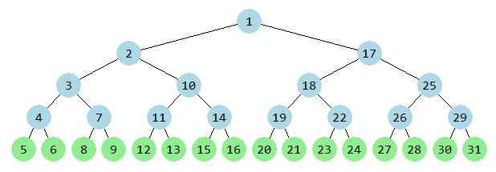
{kind=link}
Napíš funkcie
daj_zoznam(vrch)adaj_mnozinu(vrch), ktoré vrátia buď zoznam, alebo množinu všetkých hodnôt v strome. Tieto dve funkcie by sa mohli podobať na funkciusucet()z prednášky:def daj_zoznam(vrch): ... def daj_mnozinu(vrch): ...
Riešenie
def daj_zoznam(vrch): if vrch is None: return [] return [vrch.data] + daj_zoznam(vrch.left) + daj_zoznam(vrch.right) def daj_mnozinu(vrch): if vrch is None: return set() return {vrch.data} | daj_mnozinu(vrch.left) | daj_mnozinu(vrch.right)
3. Týždenný projekt¶
Poznámka
riešenie úlohy ulož do textového súboru s príponou
.pya odovzdaj na testovací server https://vektor.fmph.uniba.sk/prvé tri riadky súboru s riešením musia obsahovať:
# 3. tyzdenny projekt # student: Janko Hraško # datum: 8.3.2026
zrejme ako študenta uvedieš svoje meno, dátum uprav podľa dátumu odovzdania
definíciu triedy
Nodenemodifikuj, nedefinuj žiadne ďalšie triedy, funkcie ani globálne premenné:class Node: def __init__(self, data, left=None, right=None): self.data, self.left, self.right = data, left, right
Z prednášky vieme, že binárny strom vieme reprezentovať ako spájanú štruktúru, v ktorej v každom vrchole je referencia na ľavý a pravý podstrom - tie sú buď inštanciami triedy Node alebo None. Tejto reprezentácii budeme hovoriť model = 0.
Binárny strom môžeme reprezentovať aj inými spôsobmi. Napríklad, v jednorozmernom zozname (typ list), ktorého prvkami sú dátové časti vrcholov (atribúty data), prípadne None. V nultom prvku tohto zoznamu je koreň stromu, v prvom a druhom prvku sú potomkovia koreňa (ľavý a pravá), pričom platí, že pre i-ty prvok jeho ľavý potomok je na indexe i*2+1 a pravý na indexe i*2+2. Tejto reprezentácii budeme hovoriť model = 1.
Binárny strom by sme vedeli reprezentovať aj vnorenými zoznamami: každý vrchol je reprezentovaný trojprvkovým zoznamom [data, ľavý, pravý]. Pritom ľavý a pravý je opäť buď trojprvový zoznam, alebo None. Tejto reprezentácii budeme hovoriť model = 2.
Napríklad, ten istý binárny strom môžeme zapísať ( model=0 ):
root = Node('a', Node('b', None, Node('c')), Node('d', Node('e')))
alebo jednorozmerným zoznamom ( model=1 ):
strom = ['a', 'b', 'd', None, 'c', 'e']
teda:
0 |
1 |
2 |
3 |
4 |
5 |
|
|---|---|---|---|---|---|---|
|
|
|
|
|
|
vidíme, že 0-tý prvok má potomkov v 1. a 2., 1. má potomkov v 3. a 4., 2. má ľavého potomka v 5.
alebo zoznamom zoznamov, kde sú všetky podzoznamy trojprvkové ( model=2 ):
strom = ['a', ['b', None, ['c', None, None]], ['d', ['e', None, None], None]]
Ak by sme pre tento tretí typ mali pravidlo, že v každom podzozname zrušíme None ako posledné prvky, dostávame:
strom = ['a', ['b', None, ['c']], ['d', ['e']]]
Tieto tri reprezentácie budeme používať v nasledovných funkciách.
Úlohou je vytvoriť pythonovský program, ktorý implementuje funkcie add_node(), create_tree(), write_tree_to_file, most_frequent, count() a representation(). Všetky tieto funkcie majú prvý parameter root, ktorý je referenciou na koreň stromu (inštancia triedy Node, alebo None pre prázdny strom).
Funkcie
add_node(root, string)
Táto funkcia dostane ako vstup koreň stromu a reťazec, kde string je ľubovoľný reťazec vo formáte 'meno:cesta'.
Funkcia má rozšíriť binárny strom zadaný koreňom o nový vrchol a potom vrátiť tento strom ako výsledok funkcie.
Hodnotou nového vrcholu, teda jeho atribút data, je prvé slovo daného reťazca.
Miesto, kde sa má nový vrchol pripojiť, je definované postupnosťou (reťazcom cesta), z ktorej nás budú zaujímať len písmená 'l' a 'r' (môžu byť aj veľké 'L' a 'R').
Začína sa od koreňa stromu. Pri písmene 'l' sa pokračuje doľava a pri písmene 'r' sa pokračuje doprava. Iné znaky ako písmená 'l' a 'r' sa ignorujú. Napríklad, reťazec 'meno: vpravo a VLAVO' označuje meno vrcholu 'meno' a z cesty sa použijú len znaky najprv 'r' a potom 'L', ostatné sa odignorujú.
Cesta teda vedie
buď k už existujúcemu vrcholu - vtedy sa hodnota tohto existujúceho vrcholu nahradí novým menom, nič iné v strome sa nezmení
alebo k novému vrcholu, ktorý sa vytvorí aj s novou hodnotou vo vrchole; ak na ceste k tomuto vrcholu nejaký vrchol ešte neexistoval, tak sa vytvorí s hodnotou
None
Ak cesta neexistuje (parameter string neobsahuje ':' alebo znak ':' je posledným znakom reťazca), nastavuje sa nová hodnota do koreňa stromu.
Funkcia vždy vráti referenciu na koreň stromu (ak parameter root nebol pri volaní funkcie None, návratovou hodnotou bude tento pôvodný koreň stromu).
Zrejme pomocou tejto funkcie pracujeme priamo s prvou reprezentáciou.
Príklad:
root = None
root = add_node(root, 'KING') # Node('KING')
root = add_node(root, 'QUEEN:L') # Node('KING', Node('QUEEN'))
root = add_node(root, 'PRINCE: L L L') # Node('KING', Node('QUEEN', Node(None, Node('PRINCE'))))
root = add_node(root, 'FROG:w h y a m i f r o g') # Node('KING', Node('QUEEN', Node(None, Node('PRINCE'))), Node('FROG'))
create_tree(file_name)
Táto funkcia dostane ako vstup file_name, teda meno textového súboru, ktorý je v jednom z troch formátov:
buď má riadky vo formáte ako bol reťazec
stringz funkcieadd_node()(tedamodel=0), napríklad (riadky môžu byť v ľubovoľnom poradí):KING QUEEN:l PRINCE:lll FROG:r
alebo má v jednotlivých riadkoch informácie o prvkoch jednorozmerného zoznamu, ktoré nie sú
None(tedamodel=1)každý riadok má formát
meno:index, kdeindexje indexom do jednorozmerného zoznamu, napríklad (riadky môžu byť v ľubovoľnom poradí):
KING:0 QUEEN:1 FROG:2 PRINCE:7
alebo ako zoznam zoznamov (teda
model=2), keďže sa táto reprezentácia bude čítať aj zapisovať pomocoujson, všetky reťazce budú uzavreté v úvodzovkách a namiestoNonetam budenull, napríklad (v súbore to môže byť vo viacerých riadkoch):["KING", ["QUEEN", [null, ["PRINCE"]]], ["FROG"]]
Tvojou úlohou je tento súbor spracovať a podľa jeho obsahu rozpoznať model a vytvoriť a tiež vrátiť nový strom (teda vráti koreň takto vytvoreného binárneho stromu, teda inšatnciu triedy Node).
write_tree_to_file(root, file_name, model=0)
Táto funkcia robí presný opak oproti funkcii create_tree(). Na vstupe dostane root (inštancia triedy Node) a file_name (reťazec s cestou k súboru). Úlohou funkcie je vytvoriť textový súbor, ktorý reprezentuje daný strom zadaný referenciou na koreň. Podľa parametra model do súboru zapíše strom v požadovanej reprezentácii (pre model=2 môžeš použiť modul json). Funkcia vráti počet zapísaných vrcholov do súboru (napríklad, pre modely 0 a 1 to bude počet riadkov).
Pomocou takto zapísaného súboru by sa mal dať vytvoriť identický strom volaním funkcie create_tree().
most_frequent(root)
Táto funkcia dostane ako parameter root referenciu na koreň stromu. Funkcia vráti znakový reťazec, ktorý sa v strome vyskytol najviackrát ako hodnota vo vrchole (meno vrcholu). Ak je takých reťazcov viac, funkcia vráti množinu všetkých takýchto reťazcov. Pre prázdny strom vráti None.
count(root)
Funkcia vráti dvojicu čísel (tuple): počet vrcholov stromu, ktoré nemajú v atribúte data hodnotu None a počet všetkých vrcholov stromu.
representation(root, model=0)
Táto funkcia vráti momentálny stav binárneho stromu s koreňom root v jednej z troch reprezentácií:
pre
model = 0funkcia vrátirootpre
model = 1funkcia vráti jednorozmerný zoznam (typlist) znakových reťazcov a prípadne hodnôtNonetento zoznam by nemal mať posledné prvky
None
pre
model = 2funkcia vráti zoznam zoznamov (typlist)v tomto zozname by si mal zo všetkých podzoznamov odstrániť posledné prvky, ak sú
None